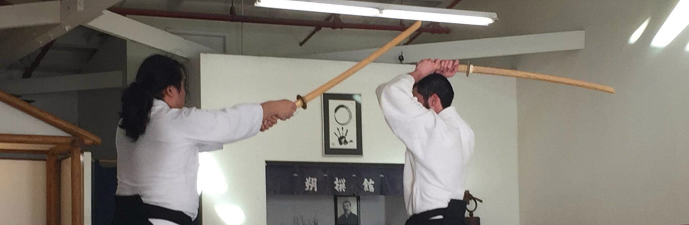

Weapons

The sword and jyo are extensions of your body and must be handled as if they have your blood running through them," writes the late master Kisshomaru Ueshiba in his book, Aikido. Unless you can make the weapons part of your body, you have not truly trained in aikido.
Weapons study is used to augment aikido training. Weapons class primarily utilize the wooden sword (bokken), the staff (jo), knife (tanto) and short sword (wakazashi).
Through the study of basic forms and partner practice we attempt to further understand the art of Aikido, particularly the study of timing and distance (maai).